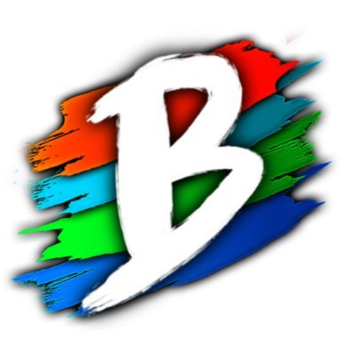
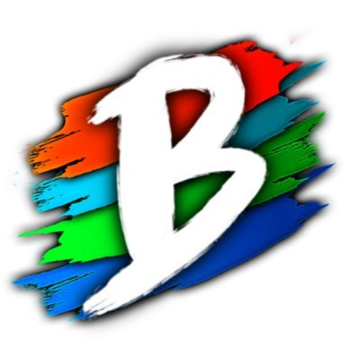

In this server there are multiple minigames you can play such as bedwars wich you have to protect your bed from other players and you have to break thier bed.
If your bed is broken you can't respawn, the way to win is to kill all the other people after breaking their beds. You can also do this in teams.
Another minigame is blitz survival (this is my favourite personally) this is based of the hunger games
in which you have to fight other players in an areana as a fight to the death.
you can do this in teams or solo.
There is also a very popular game called skyblock which you are stuck on a floating piece of land and have to build and grow food to
survive.I also like this game as it helps people become creative in what they can do while stuck.
This server is based of the hit netflix show Avatar in which people have 1 out of 4 bending abiltes and the avatar being able to
master them all.At the start you can choose your bending style earth,fire,water or air.I'm a waterbender which is quite stong the problem
is you have to be near a water source or a plant because you need water.
There is also chi blocking which is just regular fighting.Each elemant also have sub elememts which are part of it but allow different
abilties such as firebending for lighting bending earth for lavabeninf water for plant bening and air for soundbending.
.jpeg) 
